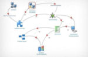

Features
Housecream is a central home automation server that aggregate inputs informations and orchestrate them with rules to control outputs.
You can interact with Housecream through the web interface and navigate in the map to see what is going on in your house. Housecream also provide a Rest API to communicate with outside component like android or iphone applications.
Inputs
With his plugin system, Housecream can include a unlimited number of entry control point to give informations on the current house state. This give to server the possibiliy to interact with everything in any kind of protocol. Here is the list of supported input component :
- Restmcu : an Arduino program to control and consult pin states
- Xmpp standard chat protocol used for example for Gtalk to interact with housecream in chat
- X10 old and not safe domotic protocol
- Knx new domotic protocol
- Many more to come... and maybe yours
Rules
Housecream provide a rule engine to define what action to do based on input and output states. This rule engine is very powerful and easy to use as rules can be created directly in the Web/API interface.
To support any kind of operation we have started the engine from the beginning of states with support of basic actions like : delayer, monostable, bistable, flip-flop.
Outputs
Outputs are external elements that can be controled by the server in result of rules. They may be output specific or regrouped in a input/output plugins
Here is a list of currently supported outputs :
- Restmcu : same as input
- Xmpp notify users through the chat that something append
- X10 old and not safe domotic protocol
- Knx new domotic protocol
- Mail the well known email protocol
- Many more to come... and maybe yours
Map
With good rules, and many input elements, the house can be autonomous. But you may want to control and see what is going on in your house without moving from your sofa or anywhere outside of your house, at work or on trip.
To provide you this functionnality, housecream has an web interface where you can navigate in the House plans, and see live actions and state of the house.
Project Informations
License
Housecream is free and open source under AGPL
Global architecture
The global architecture is composed on the server side of a core component and a web server part. The core component talk to the house with component like sensors and switches. The web part give to the user an interface to interact with the server to consult and control the house.
The user interact with the server through the web interface and modify the house state with switches and sensors. Finally the server can inform directly the user with mail, chat or call
Technical architecture
The web server is only hosting html/css/js files for the browser. The client communicate directly to the server through the REST API and get real time informations with the web socket.
The server uses Drools as the rule engine and Camel as the multi-protocol plugin system. Housecream plugins extend the definition of camel components to be included into the routing process with the power of camel protocol system. Plugins are talking to house's elements but is also communicating with external providers, like XMPP or Mail servers.
Housecream routing model
All the internal process of events on the server is based on a routing system. Camel components send events to the engine. As an output of the engine, consequences will create events for output components and update internal states.
The web interface (direct output actions), the xmpp and voice components, are included in the routing engine through the command processor
Support
If you have any problem with housecream, you can post a Google+ message on the community. We will be pleased to answer you.
FAQ
Why building this project and not use home automation boxes ?
Home automation boxes are limited to simple use cases to fit with standard usages. What we want to do with Housecream is to break any kind of limitation by allowing advanced use cases, and be sure we have ideas for that.
Is Housecream enougth to build a domotic house ?
No, Housecream is the central part, the engine part, but it has to interact with component in the house. Those component are working with a protocol that housecream can understand. If a component that you want to use is not currenly supported you can easyly create a plugin for that
Contribute
There is still a lot of work to do to get a full stable version. The roadmap is accessible through the github issues
You can contribute with code but also by sharing what you are doing with housecream on the Google+ stream.
I want to notify you on use cases that you missed
Use the gitub issue page to create a feature request
I want to improve myself the server to support use cases that you missed
All the project sources can be found on github
$ git clone https://github.com/n0rad/housecream.git
Feel free to clone and do pull requests to improve the project
I want to add support for an other protocol
In the
server/plugin
source code directory, You can find all already implemented protocols that you can use as an example. To create
one, you mainly have to implement a java interface and implement a new camel
endpoint for your specific protocol. If you have trouble to get familiar with the plugin system, feel free to ask
us support.
I want to develop my own interface to interact with the server
The web interface uses a java standard REST API to talk with the server. You should find everything you need with it to build an client for android, iphone or any kind of device supporting HTTP.
We will soon add a link to the API documentation.
I want to develop on Housecream or Restmcu but I don't know where to start
Feel free to chat with us, we will be pleased to help you
Where can I found development resources ?
Everything you need should be listed below
- Sources : Github
Download
There is no released version yet but you can try the latest snapshot
The goal of Housecream is to be easy to use. Therefore Housecream only need a Java runtime to work
$ java -jar housecream.war
You have more options by running
$ java -jar housecream.war --helpOr you can drop the war in your favorite servlet container